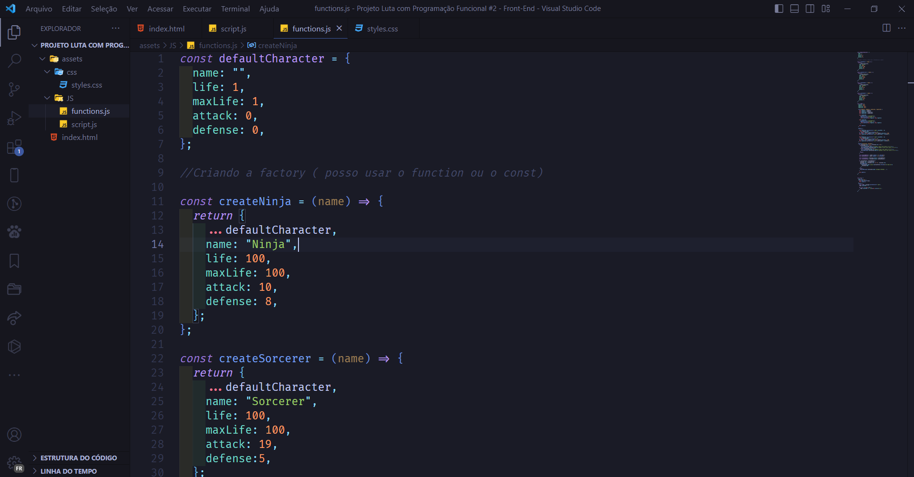
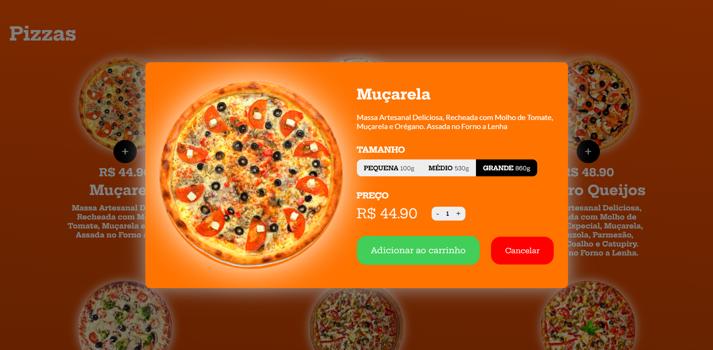
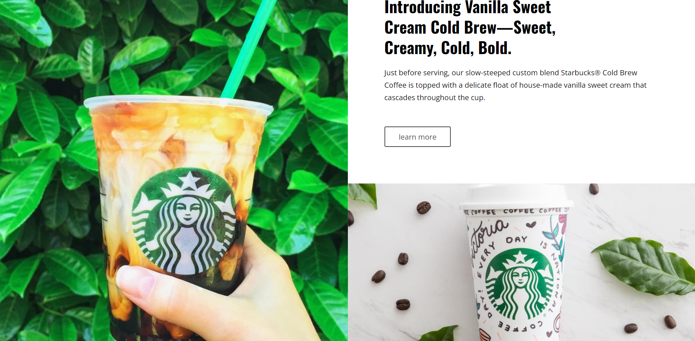
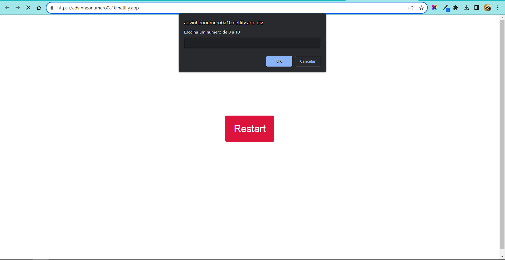

Battle Game RPG com Programação Funcional
Esse é um jogo simples feito com JavaScript usando Programação
Funcional.
O jogo foi feito como um exercício para fixar melhor os conceitos
de Programação Funcional e aplicar eles na prática.

Como mostra a imagem acima pode parecer algo bem simples e bobo,
mas por detrás dos panos tem uma lógica muito bacana.
A seguir vou mostrar um exemplo de como criei cada personagem
usando a Programação Funcional.

const defaultCharacter = { name: "", life: 1, maxLife: 1, attack:
0, defense: 0, };
Se você já estudou POO com JavaScript pode-se perceber que se
assemelha bastante, a unica diferença é que ao invés de classes eu
uso funções.
O jogo tem mais personagens e tem como eu adicionar muitos com
bastante facilidade, mas a única possibilidade de fazer isso (por
enquanto) é alterando o códogo fonte. Eu ainda não adicionei as
funcionalidades para o usuário final trocar de personagem ou até
mesmo criar o seu próprio.
Eu criei essa página web com o principal intuito de colocar minhas
habilidades em prática e deixar alguns dos meus jogos favoritos
organizados e explicados em uma página web.
Eu criei essa página web com HTMl, CSS e JavaScript. Como vários
dos meus projetos eu sempre tento deixar o mais responsivo
possível para todos os tipos de telas, e esse daqui não poderia
passar batido kkk.

Podemos ver na imagem acima uma modelo de relógio digital, que eu
fiz com JavaScript, e abaixo dele tem vários conteúdos com imagens
e trailers dos jogos.
Segue o link para quem quiser ver os detalhes:
CLIQUE AQUI!!!
const defaultCharacter = { name: "", life: 1, maxLife: 1, attack:
0, defense: 0, };
Eu não demorei muito para fazer esse projeto, foi algo bem
rapidinho para me divertir.
Apesar de ainda estar em desenvolvimento, o projeto de compra de
pizzas é um dos mais legais que venho fazendo.
Eu estou desenvolvendo esse projeto apenas com HTMl, CSS e
JavaScript. E o JavaScript tem sido o foco. A estrutura base com
HTMl e CSS foi criada com sucesso, mas nenhuma imagem das pizzas
foi inserida direto no html ou no CSS, sim, foi tudo via
JavaScript.

A imagem acima mostra alguns detalhes a página inicial.
Segue o link para quem quiser ver os detalhes:
CLIQUE AQUI!!!

const defaultCharacter = { name: "", life: 1, maxLife: 1, attack:
0, defense: 0, };
Essa é a parte onde o usuário adiciona as pizzas no carrinho e
escolhe o tamanho etc...
Apesar do carrinho não estar disponível ainda e algumas coisas
estarem faltando, eu decidi mesmo assim mostrar para vocês como
está ficando. Talvez no futuro esse projeto já esteja pronto, mas
no momento em que escrevo estas palavras e estou codando esse
site, ele ainda está incompleto.
Esse foi um template feito apenas com HTML e CSS para imitar a
página web do Starbucks.
Como faz um tempinho desde que codei, lembro somente de que eu fiz
esse template com foco em aprender e aprimorar o CSS grid.

A imagem acima mostra alguns detalhes.
INFELIZMENTE NÃO TENHO O LINK DESSE PROJETO
const defaultCharacter = { name: "", life: 1, maxLife: 1, attack:
0, defense: 0, };
Durante os meus estudos de JavaScript eu me coloco na situação de
fazer vários exercícios, e essa foi uma parecida. Eu tinha
aprendido uma função do JavaScript chamada Math.ramdom(), e eu
resolvi criar um jogo que permite que o usuário escolha um número
de o a 10, e quando ele confirmar o número escolhido o código vai
executar uma condição para ver se o usuário acertou ou errou o
número, e essa mensagem de erro ou acerto vai aparecer na tela.

A imagem acima mostra alguns detalhes.
Segue o link para quem quiser vencer a máquina
CLIQUE AQUI!!!
const defaultCharacter = { name: "", life: 1, maxLife: 1, attack:
0, defense: 0, };
Caso queira me conhecer melhor ou falar comigo, segue abaixo
alguns links das minhas redes sociais: